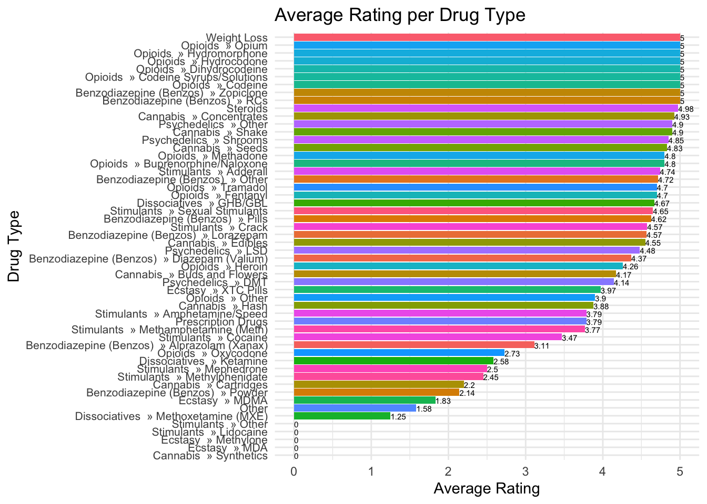

The dataset, scraped from Nemesis between 1st January to 11th January, contains 1334 files comprising 607 posts on drug sales, 415 posts on fraud, 134 posts providing guides and tutorials on illegal activities, and other miscellaneous posts. In this analysis, we will focus solely on the drug sales-related posts.
As the original documents were in text format, which made it difficult to carry out quantitative analysis, I cleaned the data and put them into a data frame. I then saved the data frame as a CSV file named “complete.csv”.
The payment method
Bitcoin and Monero accepted. All items are listed as an escrow. The order process is as follows:
After the buyer has placed an order, the vendor has 5 days to accept or reject the order.
The buyer will get a full refund if the vendor doesn’t accept the order within 5 days.
If the buyer doesn’t want to wait 5 days, there will be a cancel button after 48 hours to cancel the order and get a full refund.
After the order got accepted, the vendor has 5 days to send it. The buyer can not cancel the order at this point.
The buyer will get a full refund if the vendor doesn’t send the order within 5 days.
The buyer has 3 days to open a dispute if the order does not match the description.
After the order got finalized, the buyer can leave a review.
If you have any questions, leave a comment or create a post on our forum.
#capitalise all the drug names and count data$DrugName <-toupper(data$DrugName)item_counts <- data %>%group_by(DrugName) %>%summarise(count =n()) %>%arrange(desc(count))head(item_counts, 20)
The table below shows each brand name and its number of occurrences, and it can be observed that MONSTERLAB and HYDROGURU are the brands with the highest number of occurrences. These two brands are not specific to any particular drug, but rather the names of the dealers. It seems that they have generated a certain brand effect, representing a guarantee of high-quality drugs.
Another interesting observation is that the brand name of XTC Pills may indicate the strength or purity of these drugs and also provide a guarantee of quality for buyers. This requires further qualitative analysis and exploration.
data %>%filter(Drug_Type =="Ecstasy » XTC Pills"&!is.na(BrandName)) %>%select(Drug_Type, BrandName) %>%unique()
#Get the Rating number from stringsdata$Rating <- data$Rating %>%str_extract("\\d+(\\.\\d+)?") %>%as.numeric()#Select the columns that we needdata_RRS <- data %>%select(DrugName,Drug_Type,Vendor_Name, Rating,Reviews,Sales)
Let’s see what the header of the new DataFrame looks like and the statistical information about ratings, reviews, and sales.
By comparing sales figures, we can identify who the top sellers are on this platform, as well as who the newcomers or less established sellers might be. We can further examine their advertising, returns policies, and self-introductions to understand why some sellers’ products are more popular and in what ways they gain the trust of buyers.
Bar plot of average rating per Drug_Type:
data_RRS %>%group_by(Drug_Type) %>%summarise(mean_rating =mean(Rating)) %>%arrange(mean_rating) %>%ggplot(aes(x =reorder(Drug_Type, mean_rating), y = mean_rating, fill = Drug_Type)) +geom_bar(stat ="identity") +geom_text(aes(x =reorder(Drug_Type, mean_rating), y = mean_rating, label =round(mean_rating, 2)), vjust =0.6, hjust=0,size =2) +# Add geom_text to display value labelstheme_minimal() +labs(title ="Average Rating per Drug Type", y ="Average Rating", x ="Drug Type") +theme(legend.position ="none", axis.text.y =element_text(size =8)) +coord_flip()

Scatter plot of Sales vs. Review
ggplot(data_RRS, aes(x = Reviews, y = Sales)) +geom_point() +theme_minimal() +labs(title ="Sales vs. Reviews", x ="Reviews", y ="Sales") +geom_smooth(method ="lm", se =FALSE)
`geom_smooth()` using formula = 'y ~ x'
correlation
data_filtered <- data_RRS[!(data_RRS$Sales ==0),] #remove the product that has never be sold.cor(data_filtered[, c("Rating", "Reviews", "Sales")])
The correlation between the number of reviews and the number of sales is the strongest, with a correlation coefficient of 0.665. This means that an increase in sales is likely due to an increase in the number of reviews. The correlation between the number of reviews and the drug rating is weak, with a correlation coefficient of 0.153. The correlation between the number of sales and the drug rating is also weak, with a correlation coefficient of 0.129. This indicates that drug rating may not have a significant impact on the increase in number of sales.
Multiple Linear Regression
model <-lm(Sales ~ Rating + Reviews, data = data_filtered)summary(model)
Call:
lm(formula = Sales ~ Rating + Reviews, data = data_filtered)
Residuals:
Min 1Q Median 3Q Max
-6051.7 -809.4 -739.1 -540.8 15083.5
Coefficients:
Estimate Std. Error t value Pr(>|t|)
(Intercept) -406.0586 1417.2841 -0.287 0.775
Rating 236.9640 296.5141 0.799 0.425
Reviews 2.5495 0.1336 19.087 <2e-16 ***
---
Signif. codes: 0 '***' 0.001 '**' 0.01 '*' 0.05 '.' 0.1 ' ' 1
Residual standard error: 2700 on 477 degrees of freedom
Multiple R-squared: 0.4424, Adjusted R-squared: 0.4401
F-statistic: 189.3 on 2 and 477 DF, p-value: < 2.2e-16
par(mfrow =c(2, 2), mar =c(4, 4, 2, 1), oma =c(0, 0, 2, 0))plot(model)
Although the model only explains 44% of the variation in sales (R2 > 0.7 indicates a good fit of the model), the linear regression model demonstrates that the impact of Reviews on sales is significant, whereas the impact of Rating on sales is not significant.
Route Visualisation on a map
I used Cannabis as an example. It doesn’t work well as NA, Unknown Location (I replaced it with NA), European Union, and World Wide cannot be shown on the map because they don’t have coordinates (latitude and longitude) information. Please see the warning below. If I remove them, then in most cases, the drugs are shipped domestically, which is not useful to show them on the map. Therefore, I used Sankey Diagram to do the data visualisation without putting them on the map.
#replace "Unknown Location" with NA, Using Cannabis as an exampleRoute_Cannabis <- data %>%filter(Drug_Type_L=="Cannabis") %>%select(Ship_From, Ship_To) %>%mutate(Ship_To =str_replace(.$Ship_To, " - .*", "")) %>%mutate(Ship_From =ifelse(Ship_From =="Unknown Location", NA, Ship_From), Ship_To =ifelse(Ship_To =="Unknown Location", NA, Ship_To)) %>%group_by(Ship_From, Ship_To) %>%summarise(count =n()) %>%ungroup()
#Convert the country names to ISO3 codes:Route_Cannabis$iso_from <-countrycode(Route_Cannabis$Ship_From, "country.name", "iso3c")Route_Cannabis$iso_to <-countrycode(Route_Cannabis$Ship_To, "country.name", "iso3c")
Warning: Some values were not matched unambiguously: European Union, World Wide
Again, I used Cannabis as an example. If you hover your mouse over the gray band, you can see the frequency of appearances of this transportation route in all drug-related advertisements. The wider the gray band, the more frequent the occurrence of this route. You can also move the blocks around if the words overlap. We can substitute Cannabis with other types of drugs and compare the differences. However, due to space limitations, we may not be able to include all the necessary diagrams in our publication. So, the following way of data visualisation might be more helpful.
Top 5 routes for each type of drug based on the number of advertisements
This diagram presents observations regarding the sending and destination locations for various drug types. The findings are as follows:
Benzodiazepines (Benzos): This drug type is primarily dispatched from the United States and the United Kingdom. The majority of shipments remain within their respective regions, while others are distributed globally.
Cannabis: Cannabis is predominantly sent from the United Kingdom, the United States, and Spain. Within the United Kingdom, there is significant domestic circulation, whereas the United States mainly receives shipments for its own region.
Dissociatives and Opioids: These two drug types are mainly dispatched from the United Kingdom, Netherlands, and the United States. They are distributed worldwide, although a portion is also sent to the sender’s own region, either the United Kingdom or the United States.
Ecstasy: Ecstasy is shipped worldwide, with the Netherlands serving as the primary sending location. The circulation volumes in the United Kingdom and the United States are relatively smaller.
Prescription Drugs: The diagram indicates that India is the leading sending location for prescription drugs, followed by Germany and the Netherlands. These drugs are sent to various destinations worldwide, including the European Union, the United States, and the United Kingdom.
Psychedelics: The diagram suggests that the United States is the primary sending location for psychedelics, followed by the Netherlands. The destinations for psychedelics encompass the United States, the United Kingdom, and other global locations.
Steroids: The majority of steroids originate from an undisclosed location, while the United Kingdom also plays a role in their distribution.
Stimulants: The data reveals that the United States is the primary sending location for stimulants, followed by the Netherlands and Germany. These drugs are dispatched to various destinations worldwide, including the United States, the United Kingdom, and other locations.
Weight Loss: Based on the available data, weight loss drugs are shipped from Poland.
In summary, the sending and destination locations vary for different drug types. Some drugs circulate primarily within specific regions, while others have a global circulation. However, the distribution of vendors appears to be concentrated within the UK and EU regions, with sporadic presence of US-based vendors. These insights can help us understand the circulation trends and market demand for different drug types.
Limitations
The data sample size is limited, and the time frame for data collection spans 11 days. However, trading was ongoing during this period, and variables such as ratings, the number of sales and reviews were constantly changing. These changes could impact the statistical data and comparisons. The sales data collected on day 1 from one vendor may differ significantly from the data collected from another vendor on day 11. However, if both sets of data were collected on the same day, the differences in sales data might not be as significant.
Source Code
---title: "GeneralAnalysis"format: html: code-fold: false code-tools: true---## About the dataThe dataset, scraped from [Nemesis](http://nemesis555nchzn2dogee6mlc7xxgeeshqirmh3yzn4lo5cnd4s5a4yd.onion/) between 1^st^ January to 11^th^ January, contains 1334 files comprising 607 posts on drug sales, 415 posts on fraud, 134 posts providing guides and tutorials on illegal activities, and other miscellaneous posts. In this analysis, we will focus solely on the drug sales-related posts.As the original documents were in text format, which made it difficult to carry out quantitative analysis, I cleaned the data and put them into a data frame. I then saved the data frame as a CSV file named "complete.csv".## The payment method**Bitcoin and Monero accepted.** All items are listed as an **escrow**. The order process is as follows:- After the buyer has placed an order, the vendor has 5 days to accept or reject the order.- The buyer will get a full refund if the vendor doesn't accept the order within 5 days.- If the buyer doesn't want to wait 5 days, there will be a cancel button after 48 hours to cancel the order and get a full refund.- After the order got accepted, the vendor has 5 days to send it. The buyer can not cancel the order at this point.- The buyer will get a full refund if the vendor doesn't send the order within 5 days.- The buyer has 3 days to open a dispute if the order does not match the description.- After the order got finalized, the buyer can leave a review.- If you have any questions, leave a comment or create a post on our forum.## Load Packages and data```{r}#| label: load-packages_data#| warning: false#| code-fold: truelibrary(tidyverse)library(forcats)library(stringr)library(tidytext)library(igraph)library(ggraph)library(ggrepel)library(car)library(geosphere)library(countrycode)library(rnaturalearth)library(rnaturalearthdata)library(sf)library(lwgeom)library(ggsankey)library(networkD3)data <-read_csv("/Users/shihaitao/Documents/DarknetProject/Nemesis/complete.csv")```## The number of posts of each type of drugs (Top20)```{r}#| warning: falsedata %>%group_by(Drug_Type) %>%summarise(count =n()) %>% tidyr::separate(Drug_Type, into =c("Drug_Type", "Drug_Sub"), sep =" » ") %>%arrange(desc(count)) %>%head(.,20)```## The number of posts of each drug (Top20)```{r}#capitalise all the drug names and count data$DrugName <-toupper(data$DrugName)item_counts <- data %>%group_by(DrugName) %>%summarise(count =n()) %>%arrange(desc(count))head(item_counts, 20)```## The brand name of the drugs for saleThe table below shows each brand name and its number of occurrences, and it can be observed that MONSTERLAB and HYDROGURU are the brands with the highest number of occurrences. These two brands are not specific to any particular drug, but rather the names of the dealers. It seems that they have generated a certain brand effect, representing a guarantee of high-quality drugs.```{r}data$BrandName <-toupper(data$BrandName) BrandName_Re_NA <- data$BrandName[!is.na(data$BrandName)] #remove NAbrand_counts <-as_tibble(table(BrandName_Re_NA))colnames(brand_counts) <-c("BrandName", "Count")brand_counts <- brand_counts %>%arrange(desc(Count))brand_counts```### The brand name of XTC PillsAnother interesting observation is that the brand name of XTC Pills may indicate the strength or purity of these drugs and also provide a guarantee of quality for buyers. This requires further qualitative analysis and exploration.```{r}data %>%filter(Drug_Type =="Ecstasy » XTC Pills"&!is.na(BrandName)) %>%select(Drug_Type, BrandName) %>%unique() ```### The avalibility rate```{r}mean(data$Availablity =="Yes", na.rm =TRUE)```## Rating, Reviews and Sales```{r}#Get the Rating number from stringsdata$Rating <- data$Rating %>%str_extract("\\d+(\\.\\d+)?") %>%as.numeric()#Select the columns that we needdata_RRS <- data %>%select(DrugName,Drug_Type,Vendor_Name, Rating,Reviews,Sales)```### Let's see what the header of the new DataFrame looks like and the statistical information about ratings, reviews, and sales.```{r}head(data_RRS)summary(data_RRS[, c("Rating", "Reviews", "Sales")])```### Grouped summary statistics: Calculate summary statistics for each type of drug.```{r}group_Drug_Type <- data_RRS %>%group_by(Drug_Type) %>%summarise(mean_rating =mean(Rating),total_reviews =sum(Reviews),toal_sales =sum(Sales))```**Best-selling drug types (top 20)**```{r}group_Drug_Type %>%arrange(desc(toal_sales)) %>%head(20)%>%select(Drug_Type,toal_sales)```**Highest rated drug types (top 20)**```{r}group_Drug_Type %>%arrange(desc(mean_rating)) %>%head(20) %>%select(Drug_Type, mean_rating)```**Types of drugs that get the most views (top 20)**```{r}group_Drug_Type %>%arrange(desc(total_reviews)) %>%head(20) %>%select(Drug_Type, total_reviews)```### Grouped summary statistics: Calculate summary statistics for Vendors.```{r}group_Vendor <- data_RRS %>%group_by(Vendor_Name) %>%summarise(total_reviews =sum(Reviews),total_sales =sum(Sales))```**Top 10 vendors based on sales**```{r}group_Vendor %>%arrange(desc(total_sales)) %>%select(Vendor_Name,total_sales) %>%head(10)```**Bottom 10 vendors based on sales**```{r}group_Vendor %>%arrange(desc(total_sales)) %>%select(Vendor_Name,total_sales) %>%tail(10)```By comparing sales figures, we can identify who the top sellers are on this platform, as well as who the newcomers or less established sellers might be. We can further examine their advertising, returns policies, and self-introductions to understand why some sellers' products are more popular and in what ways they gain the trust of buyers.### Bar plot of average rating per Drug_Type:```{r}data_RRS %>%group_by(Drug_Type) %>%summarise(mean_rating =mean(Rating)) %>%arrange(mean_rating) %>%ggplot(aes(x =reorder(Drug_Type, mean_rating), y = mean_rating, fill = Drug_Type)) +geom_bar(stat ="identity") +geom_text(aes(x =reorder(Drug_Type, mean_rating), y = mean_rating, label =round(mean_rating, 2)), vjust =0.6, hjust=0,size =2) +# Add geom_text to display value labelstheme_minimal() +labs(title ="Average Rating per Drug Type", y ="Average Rating", x ="Drug Type") +theme(legend.position ="none", axis.text.y =element_text(size =8)) +coord_flip()```### Scatter plot of Sales vs. Review```{r}ggplot(data_RRS, aes(x = Reviews, y = Sales)) +geom_point() +theme_minimal() +labs(title ="Sales vs. Reviews", x ="Reviews", y ="Sales") +geom_smooth(method ="lm", se =FALSE)```### correlation```{r}data_filtered <- data_RRS[!(data_RRS$Sales ==0),] #remove the product that has never be sold.cor(data_filtered[, c("Rating", "Reviews", "Sales")])```The correlation between the number of reviews and the number of sales is the strongest, with a correlation coefficient of 0.665. This means that an increase in sales is likely due to an increase in the number of reviews. The correlation between the number of reviews and the drug rating is weak, with a correlation coefficient of 0.153. The correlation between the number of sales and the drug rating is also weak, with a correlation coefficient of 0.129. This indicates that drug rating may not have a significant impact on the increase in number of sales.### Multiple Linear Regression```{r}model <-lm(Sales ~ Rating + Reviews, data = data_filtered)summary(model)par(mfrow =c(2, 2), mar =c(4, 4, 2, 1), oma =c(0, 0, 2, 0))plot(model)```Although the model only explains 44% of the variation in sales (R^2^ \> 0.7 indicates a good fit of the model), the linear regression model demonstrates that the impact of Reviews on sales is significant, whereas the impact of Rating on sales is not significant.### Route Visualisation on a mapI used Cannabis as an example. It doesn't work well as NA, Unknown Location (I replaced it with NA), European Union, and World Wide cannot be shown on the map because they don't have coordinates (latitude and longitude) information. Please see the warning below. If I remove them, then in most cases, the drugs are shipped domestically, which is not useful to show them on the map. Therefore, I used Sankey Diagram to do the data visualisation without putting them on the map.```{r}#| warning: false#replace "Unknown Location" with NA, Using Cannabis as an exampleRoute_Cannabis <- data %>%filter(Drug_Type_L=="Cannabis") %>%select(Ship_From, Ship_To) %>%mutate(Ship_To =str_replace(.$Ship_To, " - .*", "")) %>%mutate(Ship_From =ifelse(Ship_From =="Unknown Location", NA, Ship_From), Ship_To =ifelse(Ship_To =="Unknown Location", NA, Ship_To)) %>%group_by(Ship_From, Ship_To) %>%summarise(count =n()) %>%ungroup()``````{r}#Convert the country names to ISO3 codes:Route_Cannabis$iso_from <-countrycode(Route_Cannabis$Ship_From, "country.name", "iso3c")Route_Cannabis$iso_to <-countrycode(Route_Cannabis$Ship_To, "country.name", "iso3c")world <-ne_countries(scale ="medium", returnclass ="sf")world$geometry <-st_make_valid(world$geometry)coordinates <-data.frame(code = world$iso_a3,lon =as.numeric(st_coordinates(st_centroid(world$geometry))[, 1]),lat =as.numeric(st_coordinates(st_centroid(world$geometry))[, 2]))Route_Cannabis <-merge(Route_Cannabis, coordinates, by.x ="iso_from", by.y ="code")Route_Cannabis <-merge(Route_Cannabis, coordinates, by.x ="iso_to", by.y ="code", suffixes =c("_from", "_to"))#Calculate the midpoints and angles for the labels:Route_Cannabis$mid_lat <- (Route_Cannabis$lat_from + Route_Cannabis$lat_to) /2Route_Cannabis$mid_lon <- (Route_Cannabis$lon_from + Route_Cannabis$lon_to) /2Route_Cannabis$angle <-with(Route_Cannabis, atan2(lat_to - lat_from, lon_to - lon_from) *180/ pi)map <-ggplot() +borders("world", colour ="gray50", fill ="gray80") +coord_fixed(xlim =c(-180, 180), ylim =c(-60, 90), ratio =1.3) +theme_minimal() +theme(panel.grid =element_blank())map +geom_text(data = Route_Cannabis,aes(x = mid_lon, y = mid_lat, label =paste(Ship_From, "→", Ship_To), angle = angle, col='red'),size =2,hjust =0,vjust =0,nudge_x =0.5,nudge_y =0.5 )```### Sankey Diagram: Routes for Cannabis (interactive)```{r}#| warning: falseroutes_type <- data %>%select(Ship_From, Ship_To, Drug_Type_L) %>%group_by(Drug_Type_L,Ship_From, Ship_To) %>%summarise(count =n()) %>%arrange(Drug_Type_L, desc(count)) df <- routes_type %>%filter(Drug_Type_L =="Cannabis") %>%select(Ship_From,Ship_To,count) nodes <-data.frame(name=c(df$Ship_From, df$Ship_To)) %>%unique()df$IDsource=match(df$Ship_From, nodes$name)-1df$IDtarget=match(df$Ship_To, nodes$name)-1ColourScal ='d3.scaleOrdinal() .range(["#FDE725FF","#B4DE2CFF","#6DCD59FF","#35B779FF","#1F9E89FF","#26828EFF","#31688EFF","#3E4A89FF","#482878FF","#440154FF"])'sankeyNetwork(Links = df, Nodes = nodes,Source ="IDsource", Target ="IDtarget",Value ="count", NodeID ="name", sinksRight=TRUE, colourScale=ColourScal, nodeWidth=60, fontSize=20, nodePadding=20)```Again, I used Cannabis as an example. If you hover your mouse over the gray band, you can see the frequency of appearances of this transportation route in all drug-related advertisements. The wider the gray band, the more frequent the occurrence of this route. You can also move the blocks around if the words overlap. We can substitute Cannabis with other types of drugs and compare the differences. However, due to space limitations, we may not be able to include all the necessary diagrams in our publication. So, the following way of data visualisation might be more helpful.### Top 5 routes for each type of drug based on the number of advertisements```{r}#| warning: falseroutes_type_top5 <- data %>%select(Ship_From, Ship_To, Drug_Type_L) %>%group_by(Drug_Type_L, Ship_From, Ship_To) %>%summarise(count =n(), .groups ="drop") %>%arrange(Drug_Type_L, desc(count)) %>%group_by(Drug_Type_L) %>%slice_head(n =5) %>%mutate(Route =paste(Ship_From, "→", Ship_To)) %>%select(-Ship_From, -Ship_To) %>%mutate(Route =reorder_within(Route, count, Drug_Type_L))ggplot(routes_type_top5, aes(x = count, y = Route, fill = Drug_Type_L)) +geom_bar(stat ="identity", position ="dodge") +geom_text(aes(label = count), size =2.5, position =position_dodge(width =0.9), hjust =-0.1, vjust =0.5) +labs(x ="Count", y ="Route", fill ="Drug Type") +scale_fill_discrete(name ="Drug Type") +scale_y_reordered() +theme_minimal() +theme(legend.position ="right", axis.text.y =element_text(angle =0, hjust =1, vjust =0.5))```This diagram presents observations regarding the sending and destination locations for various drug types. The findings are as follows:- **Benzodiazepines (Benzos):** This drug type is primarily dispatched from the United States and the United Kingdom. The majority of shipments remain within their respective regions, while others are distributed globally.- **Cannabis:** Cannabis is predominantly sent from the United Kingdom, the United States, and Spain. Within the United Kingdom, there is significant domestic circulation, whereas the United States mainly receives shipments for its own region.- **Dissociatives and Opioids:** These two drug types are mainly dispatched from the United Kingdom, Netherlands, and the United States. They are distributed worldwide, although a portion is also sent to the sender's own region, either the United Kingdom or the United States.- **Ecstasy:** Ecstasy is shipped worldwide, with the Netherlands serving as the primary sending location. The circulation volumes in the United Kingdom and the United States are relatively smaller.- **Prescription Drugs:** The diagram indicates that India is the leading sending location for prescription drugs, followed by Germany and the Netherlands. These drugs are sent to various destinations worldwide, including the European Union, the United States, and the United Kingdom.- **Psychedelics:** The diagram suggests that the United States is the primary sending location for psychedelics, followed by the Netherlands. The destinations for psychedelics encompass the United States, the United Kingdom, and other global locations.- **Steroids:** The majority of steroids originate from an undisclosed location, while the United Kingdom also plays a role in their distribution.- **Stimulants:** The data reveals that the United States is the primary sending location for stimulants, followed by the Netherlands and Germany. These drugs are dispatched to various destinations worldwide, including the United States, the United Kingdom, and other locations.- **Weight Loss:** Based on the available data, weight loss drugs are shipped from Poland.In summary, the sending and destination locations vary for different drug types. Some drugs circulate primarily within specific regions, while others have a global circulation. However, the distribution of vendors appears to be concentrated within the UK and EU regions, with sporadic presence of US-based vendors. These insights can help us understand the circulation trends and market demand for different drug types.## LimitationsThe data sample size is limited, and the time frame for data collection spans 11 days. However, trading was ongoing during this period, and variables such as ratings, the number of sales and reviews were constantly changing. These changes could impact the statistical data and comparisons. The sales data collected on day 1 from one vendor may differ significantly from the data collected from another vendor on day 11. However, if both sets of data were collected on the same day, the differences in sales data might not be as significant.